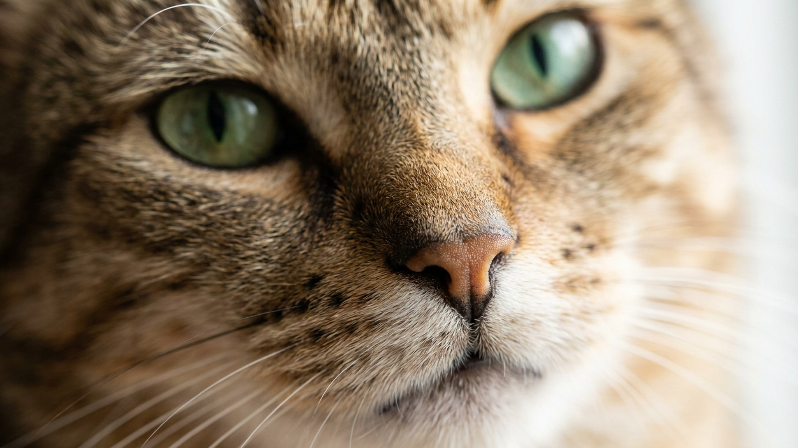

Тонкинез встречает хозяина у двери, несёт игрушку в зубах и следит за каждым шагом по квартире — поведение, которое обычно приписывают лабрадорам. У этой породы есть название: гибрид сиамской и бурманской кошки. Большинство владельцев не знают, что берут не просто красивую кошку, а существо с почти человеческой потребностью в общении. Ниже — честно о характере, голосе, привязанности и о том, кому тонкинез подойдёт, а кому создаст трудности.
🐾 Первая помощь — всегда под рукой
AnimaLife подскажет, что делать в тревожной ситуации с питомцем ещё до визита к врачу. Откройте в один тап.
Тонкинез появился в Северной Америке в середине XX века как попытка объединить лучшее двух пород. От сиамской — общительность, ум и голосистость. От бурмы — покладистый нрав и терпимость к детям. Результат: кошка, которая хочет быть рядом, но не навязчива до истерики, как чистокровный сиам.
Тонкинез плохо переносит длительное одиночество. Восемь часов без общения — и кошка начнёт развлекать себя сама: переставит всё с полок, разберёт пакеты, изучит содержимое ящиков. Это не вредность — это стресс от скуки.
Если вы часто и надолго уходите из дома, решение простое: взять двух тонкинезов. Они прекрасно ладят друг с другом и не дают партнёру скучать. Одиночное содержание требует 30–40 минут активных игр в день — иначе избыточная энергия уйдёт не туда.
Тонкинез не такой громкий, как сиам, но молчащим его не назовут. Порода «разговорчива»: утром сообщит, что пора есть, вечером расскажет о своём дне, ночью уточнит, почему дверь в спальню закрыта. Если вам важна тишина в квартире — это важный момент для обдумывания.
Зато тонкинез хорошо понимает интонацию: строгое «нет» работает. Порода обучаема и реагирует на похвалу.
Короткая шелковистая шерсть не требует вычёсывания — достаточно провести рукой раз в неделю. Уши осматривать раз в две недели. Когтеточка обязательна — порода активная, когти стачивает интенсивно.
Тонкинез идеален для семей с детьми, людей, работающих дома, или тех, кто готов уделять кошке реальное внимание. Порода не для тех, кто хочет «независимого животного в углу» — тонкинез от этого страдает.
Если вы цените ум, преданность и готовы к тому, что кошка будет полноправным участником домашней жизни, тонкинез закроет этот запрос полностью.
🐾 Экономьте на лишних визитах к врачу
Сначала спросите AI-ветеринара в AnimaLife — часто этого достаточно, чтобы понять, нужен ли визит к врачу.
🐾 Понравился разбор?
Подпишитесь на канал — каждый день разбираем по одному тревожному симптому у кошек и собак: что в пределах нормы, а когда пора к врачу. Подпишитесь, чтобы не пропустить разбор, который может спасти здоровье вашего питомца.
Материал носит информационный характер и не заменяет очную консультацию ветеринара.